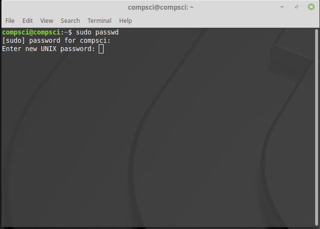

Step 1: build a base VM
For our class we already had a base VM to clone off
Step 2: Change the VM root and user password

Step 3: Install needed Programs
For our class we needed atom, apache2, mysql and phpmyadmin
Atom Installation
Apache2 Install
mySql initial installation, It gave us a few probelems
MySql Main install
Mysql server password change, this took some time and google to figure out
phpmyadmin installation